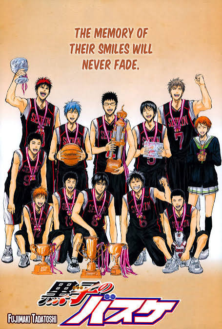

Kuroko no Basket follows a quiet playmaker whose invisible presence changes the game and gives his team a chance to stand among legends.
Explore More
Kuroko no Basket follows a quiet playmaker whose invisible presence changes the game and gives his team a chance to stand among legends.
Learn More